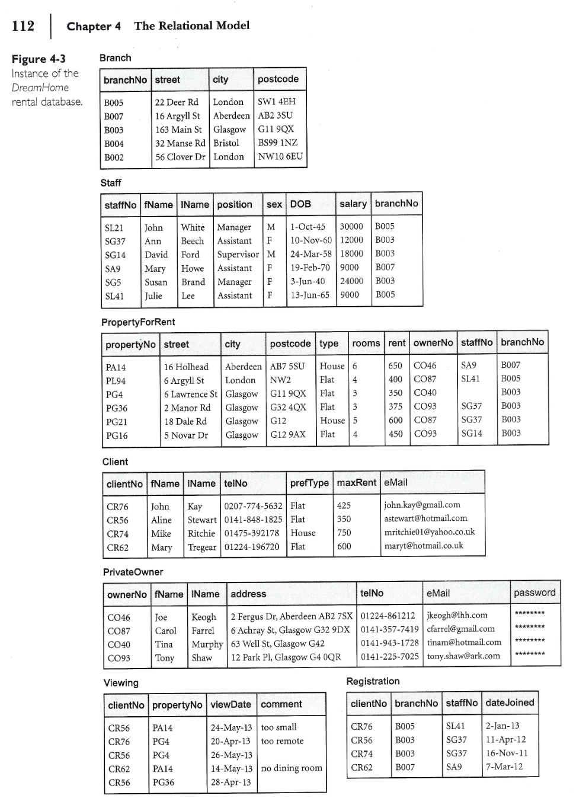

The primary aim of this lab is to get you introduced to the fundamentals of databases. At their core, databases manage and manipulate substantial volumes of data, which is a key reason for the development of various database management systems (DBMS), including Microsoft Access. Access operates as a passive relational DBMS—meaning it requires user interaction to open and does not autonomously reorganize files among other functions. Microsoft Access 2016 is available in our RMC laboratory.
Should you not have Access or prefer an alternative, LibreOffice Base is a viable option, particularly for those interested in using open-source software. For individuals with database experience, MySQL (with Workbench or Wamp) is suggested.
This practical exercise involves creating a ‘Dream House’ database and conducting queries using the software’s tools. This will help you grasp the database aspects we’ll tackle during the course.
This laboratory is an exploration and familiarization exercise. You can work as a team of two. Clearly indicate the members of your team in the report you submit.
For guidance, numerous online tutorials are available, including comprehensive resources for Access and other similar DBMS at Tutorialspoint.
Goals:
Exercise 1:
Exercise 2:
One of the most powerful ways of analyzing your data in Access is by creating a query.
Running a query is like asking your database a question.
A query can retrieve data from a table or multiple tables. It all depends on how complex your question is!
In this exercise, you need to design a few queries in order to manipulate and modify the data that you entered in your database created in Exercise 1.
Design a set of queries to:
a) List the full details of all staff members.
b) Produce a list of all staff showing only the employee’s number, first name, last name and salary .
c) List the numbers of all rental properties that have already been visited.
d) Find the cities in which there are properties for rent.
To show your work, include in your report screenshots as needed showing how you designed your queries and the resulting data.
Exercise 3:
Create a PDF file with the title yourLastNames_Lab1.pdf with a suitable title on the first page, such as Lab1_Solution and submit it to Moodle by Thursday, January 18th, 2024. Clearly indicate the names of the team members. In case of a late submission, a 10% late penalty will be applied per day. After 6 days, the submission is no longer accepted.
